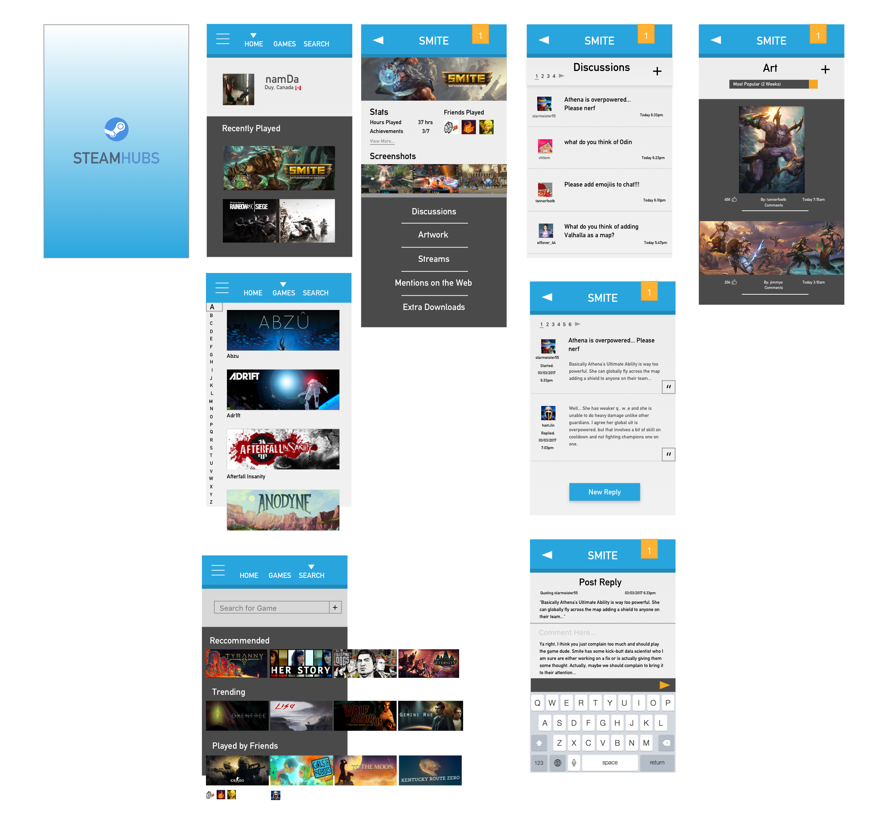

If you were unable to view the prototype above, you can find it also here:
Steam is a digital storefront and platform for users to buy and play games on their personal computers (PC). It is currently the dominant platform for PC gamers with 13 million users online at any one time[1].
Steamhubs is a steam community redesign and re-imagining of how players can interact with a game community. Currently, game communities are segmented across multiple social media sites: Raptr, Neogaf, Sub-Reddits, and Tumblr. Steamhubs aims to provide a minimalistic and delightful user experience to be the one stop shop for consuming gaming media
With Benjie Button, we have our primary persona who needs to fill in a social gap in his gaming. With SteamHubs, the goal is to give users like Benjie an engaging experience.
Success would involve a cleaner experience measured by user feedback. For a business, metrics such as session time, and increased number of posts in the steam community would be important to look at. Other metrics could include increased buy conversion on games that can be correlated with steam game hub visits, or increased social activity among users and their friends.
To fully flesh-out SteamHubs, an analysis of what kind of tasks users need to perform day to day was created to determine what to prioritize during interface design. The idea is for the user to be able to find games easily, and comment with other communities in the least amount of steps possible. Once a user finds a game in step 1.0 - steps 2.0 - 4.0 can be reached from a central space and allow a user to keep interacting with community content. For example, if a user wanted to comment on a forum post, and then talk to a friend within the same session, they should be able to do that in whatever order they choose. For that reason, steps 2.0 - 4.0 are interchangeable, and additional steps such looking at game art or videos can be added in between. What this results in is a central hub for the user to be able to perform their community interactions.
Above are wireframes developed with central community hub in mind from the task analysis. The idea is that players who go to SteamHubs want to check on communities periodically when they are away from gaming. Every game portrait shall link to a central game hub, and buttons to interact with content should have a clear call to action.
The first screen that a user sees after the launch page is the home page which contains the linked player profile from Steam. Here they can see all of the games they recently played along with access to other tabs to find other games. Recently played games are at the forefront due to a user more likely to have interest in a game that they are currently playing.
For the majority of the mobile design, an emphasis on showing less information to the user while also allowing them to navigate with familiar cues was prioritized. Each screen contains a header containing screen information. Content goes below the header, and dividing lines should separate content whether it is a colour change or line itself. Visuals will be talked about further after navigation.
Content pages should include fewer than 5 posts per page. The goal is to have the screens readable, versus having the user bombarded with information to keep the minimalistic style. An example of the simple post layout is shown below with a maximum of 4 options:
For navigation, a user should always understand that images are all clickable. Whether it is game art taking a user to a game hub, or a profile picture pushing them to a friend profile page, this is crucial to the SteamHubs experience. Exceptions to the rule involve video or art posts in a game hub, however it should be clear that clicking these leads you to more details about the post.
Secondly, a header specific to a game hub allows a user to separate the discover screens from game community screens. When a user is in a game hub, they understand they can always go back one screen with a back arrow on the left of the header.
A design walkthrough using Marvel was run through with 3 participants during a interface design workshop class at the University of Waterloo. The main question and task for the participants was “Comment on a discussion post for a game”. One user mentioned that there was not enough actions available for discussions, such as reply count, and messaging options when replying to a post. All three were able to navigate successfully to the post without external difficulty. Further testing is required once the SteamHubs is fully complete with tools such as A/B Testing once a conversion funnel is created or user surveys.
For the visual branding, SteamHubs wants to brand itself as modern and clean to attract new steam users. Minimalistic use of colour, along with strong separation of sections through colour provide eye catching flair. Colours are also linked to navigation for certain calls to action. The palette chosen, composing of white, orange, grey and various shades of teal enable a strong contrast between sections. See the visuals applied across multiple screens below:
SteamHubs still has sections to be complete such as game streams, game videos, and games mentions, but the base navigation, layout, and colours are there as a strong foundation for future development. Additional thought towards user settings pages should be taken to into account along with on-boarding should be developed next.
As this was the first interface design for mobile project I have done, I found process helps greatly in developing and improving an idea. Understanding your goals and tasks before delving into layout and navigation is extremely crucial to having a better understanding of what you want to build. This will save time and allow a designer to iterate faster without being held back by a goal that hasn’t been fully fleshed out.